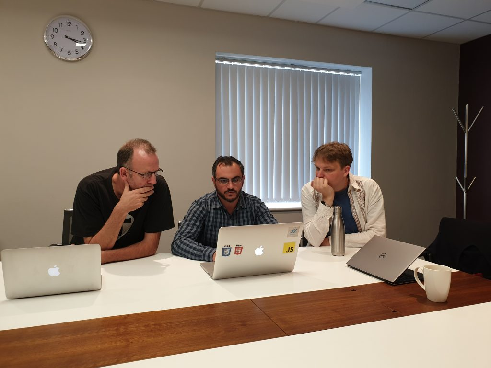

Pret-a-LLOD members at NUI Galway met with Marc Verhagen (Brandeis University, USA) on LAPPS (Language Applications) Grid, an open interoperable web service platform for natural language processing research and development. Discussions were around collaboration opportunities in this area, where functionality of the TEANGA platform for Linked Data based NLP services that is under development in Pret-a-LLOD was compared with the LAPPS Grid approach. More information about the LAPPS Grid can be found at: https://wiki.lappsgrid.org/
